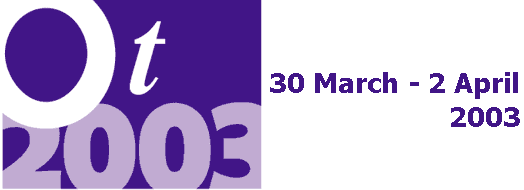

|
|
 Plenary Talk: Wednesday 2 April, 09:00 Plenary Talk: Wednesday 2 April, 09:00
Kevin P. Tyson
|
Software Development as an Economic Activity
In the half century or so that we have been using software systems in business
we have achieved remarkable results. Today few businesses are conducted in a
manner even vaguely similar to how they were conducted prior to the
introduction of computers. In addition, there are now businesses that simply
could not exist without their attendant software systems. Along the way, the
tools, methods and techniques we have used to develop these systems have
evolved. The business of software development has also evolved, largely in
response to our marked inability to develop systems possessed of greater
utility and reliability at reasonable costs. The economic environment that
gave rise to the business climate that fostered our current methods has
changed. In this talk, we will explore how this changing business climate may
impact the next generation of tools, methods and techniques and how we as
software developers can utilize these changes to achieve our common goals of
creating a better business environment in which we can build better software
systems.
|
|
| |
Kevin P. Tyson
I am an independent consultant in New York City specializing in systems
architecture in the business areas of financial services and energy. I
have been programming, designing and managing systems development for
thirty years for a variety of firms ranging from small startups to
large Fortune 500 corporations. The systems I have built range from
systems infrastructure to business applications and web-based business
solutions employing a number of technologies including messaging and
distributed objects. I have participated in a number of
standardization efforts including CORBA, UML and RM-ODP.
|
|
|